Es un espacio institucional de encuentro y demostración donde los estudiantes de la Escuela Técnica N° 462 abren sus puertas a distintas escuelas de la cuidad, familias y docentes los conocimientos, saberes y proyectos prácticos desarrollados a lo largo del ciclo lectivo. En este evento se integran la teoría y la práctica adquiridas en las distintas áreas técnicas, como el diseño de redes informáticas y el desarrollo de software en Python, reflejando el esfuerzo, la creatividad y la innovación tecnológica impulsados desde la educación técnica.
¿Quiénes Somos?
Somos los estudiantes de 5to año del área de Informática de la Escuela Técnica N° 462 de Reconquista. En el transcurso del año nos dedicamos el primer trimestre en todo lo relacionado a redes de informática, armados de cables, comandos, exposiciones de la red de nuetros hogares y la importancia de ello, luego en el segundo trimestre cambio la cosa y empezamos un lenguaje de programación nuevo llamado python donde desarrollamos los distintos sistemas informaticos.
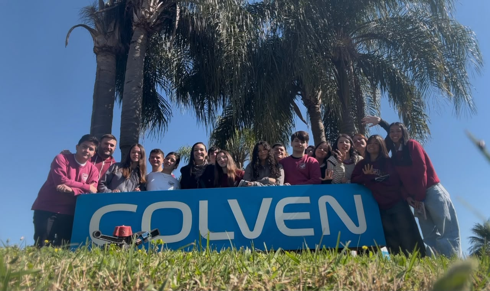
Visita a la planta industrial de Colven — Guadalupe Norte, Santa Fe
1° Trimestre
Redes Informáticas e Infraestructura
Concepto Clave
¿Qué es una red informática?
Es un conjunto de ordenadores conectados entre sí que permiten compartir información (documentos, imágenes), recursos (impresoras, discos duros) y servicios (como Internet).
Ventajas Principales
1. Comunicación eficiente
Facilita la interacción rápida y fluida entre usuarios conectados en tiempo real.
2. Compartir recursos
Uso compartido de impresoras, archivos y almacenamiento, reduciendo costos significativamente.
3. Centralización
Simplifica la administración, actualizaciones y mantenimiento centralizado desde un servidor principal.
4. Escalabilidad
Las redes pueden ampliarse fácilmente a medida que crece la organización o la institución.
Costos Iniciales: Requiere una inversión inicial de infraestructura y software para poder operar y automatizar tareas.
Por Cobertura
Clasificación según su tamaño o área
PAN (Red de área personal)
Comunica dispositivos en un radio de pocos metros (ej. auricular Bluetooth y teléfono).
LAN (Red de área local)
Pequeña extensión como una casa, un instituto, una universidad o una empresa.
MAN (Red de área metropolitana)
Cubre una mayor superficie como una ciudad o municipio, conectando sucursales.
WAN (Red de área extensa)
Conecta equipos entre ciudades, países o continentes distintos (ej. Internet).
Por Privacidad
Clasificación según nivel de acceso
Redes Públicas
Acceso global y disponible para el público en general (ej. Internet, Wi-Fi público).
Redes Privadas
Restringidas al propietario o usuarios que las utilizan (Intranets).
VPN (Virtual Private Network)
Conexión segura y cifrada construida sobre una red global pública.
Dispositivos
Dispositivos de interconexión local
Hub (Concentrador)
Repite las señales a todos los puertos sin segmentar el tráfico, lo que puede causar colisiones.
Switch (Conmutador)
Filtra y dirige los datos solo al destino correcto, segmentando la red y mejorando notablemente el rendimiento.
Punto de Acceso (AP)
Conecta dispositivos inalámbricos a la red física y extiende la cobertura Wi-Fi.
Router (Enrutador)
Conecta redes diferentes, distribuye Internet en el hogar u oficina y gestiona el tráfico local.
Identificación Única
Tarjeta de Red (NIC) & Dirección MAC
Elemento de hardware imprescindible para enviar y recibir información. Cada tarjeta posee un identificador único grabado de fábrica llamado Dirección MAC (6 bytes / 48 bits), donde los primeros 3 bytes indican el fabricante (OUI).
Físico
Medios de Transmisión
Cable Coaxial
Similar al de antena de televisión; utiliza conector BNC.
Par Trenzado (UTP / FTP / STP)
UTP sin blindaje, FTP con lámina metálica y STP blindado para entornos industriales.
Fibra Óptica
Transmite luz a gran velocidad (Gigabits) e inmune a interferencias magnéticas.
Estándares
Normas de Cableado (T568A y T568B)
Cable Directo
Conecta dispositivos distintos (PC a Switch, Switch a Router) utilizando la misma norma en ambos extremos.
Cable Cruzado
Conecta dispositivos similares (PC a PC, Router a Router) utilizando T568A en un extremo y T568B en el otro.
Protocolo
IPv4 vs IPv6
IPv4: Direcciones de 32 bits (4.3 mil millones de IPs) en formato decimal separado por puntos (ej. 192.168.1.1).
IPv6: Direcciones de 128 bits con notación hexadecimal.
Configuración
IP Estática vs Dinámica
Estática: Configuración manual en servidores o cámaras.
Dinámica: Asignada automáticamente por un servidor DHCP.
Diagnóstico
Comandos Útiles de Red
tracert: Rastrea la ruta que sigue un paquete mostrando saltos y latencia en milisegundos.
netstat: Muestra conexiones activas y estados como ESTABLISHED o LISTENING.
ipconfig /release y /renew: Liberan y solicitan una nueva IP al servidor DHCP.
Exposiciones del 1° Trimestre en Aula
Fotos de las presentaciones sobre diagramas de red, ubicación de dispositivos y análisis de redes del hogar realizadas por los alumnos de 5to año:
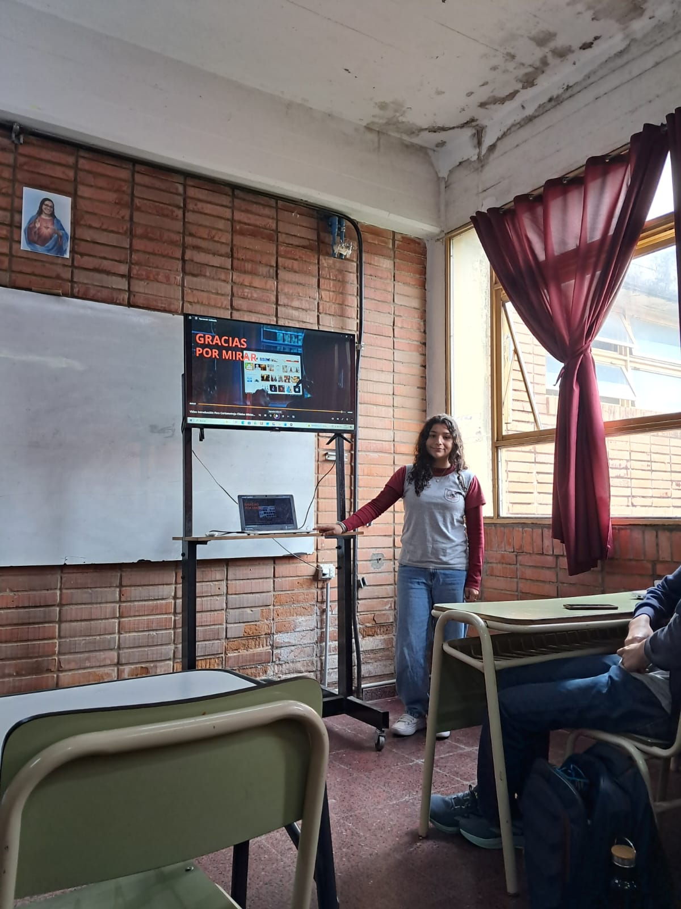
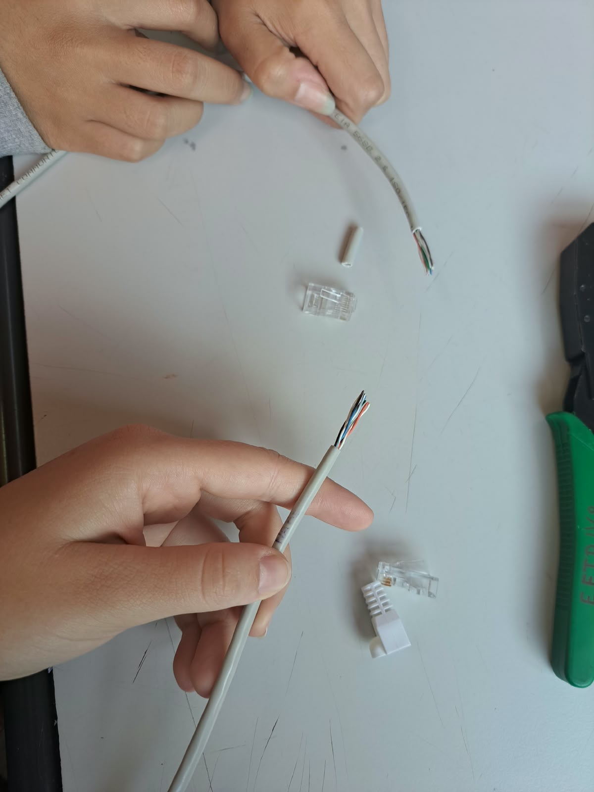
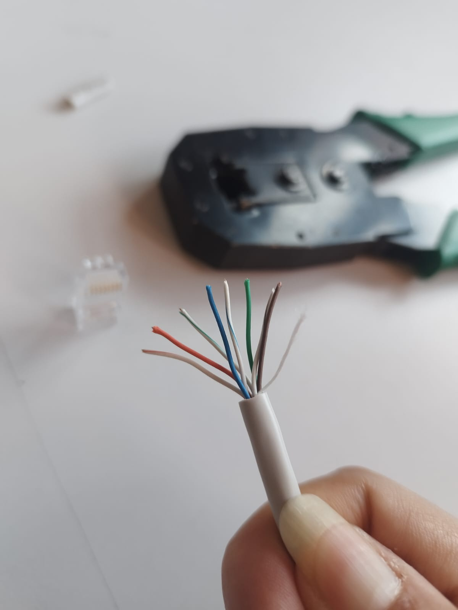
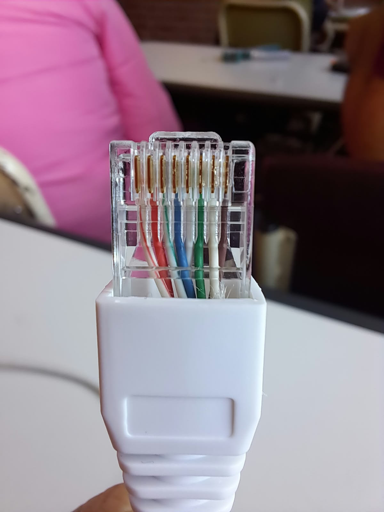
2° Trimestre
Programación en Python y sistemas informáticos de los alumnos
A continuación presentamos los diferentes sistemas desarrollados en Python por los alumnos durante el ciclo lectivo, aplicando interfaces gráficas interactivas y bases de datos relacionales:
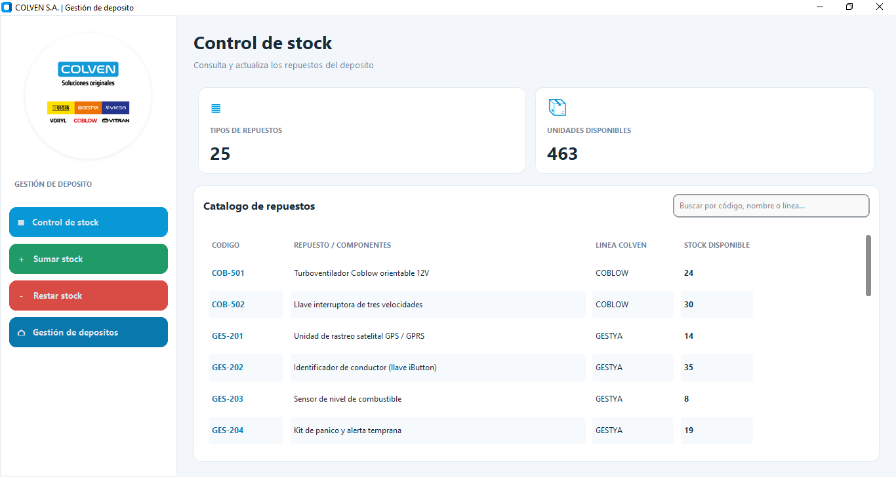
COLVEN S.A. | Gestión de Depósito
Es una aplicación de escritorio desarrollada en Python orientada al ámbito industrial y logístico. Su función principal es optimizar el control de inventario de repuestos y la administración de múltiples sucursales o depósitos para la empresa Colven S.A.
El sistema está diseñado bajo el concepto de Interfaz de Usuario Moderna , ofreciendo una experiencia visual limpia, intuitiva y profesional gracias al uso de CustomTkinter.
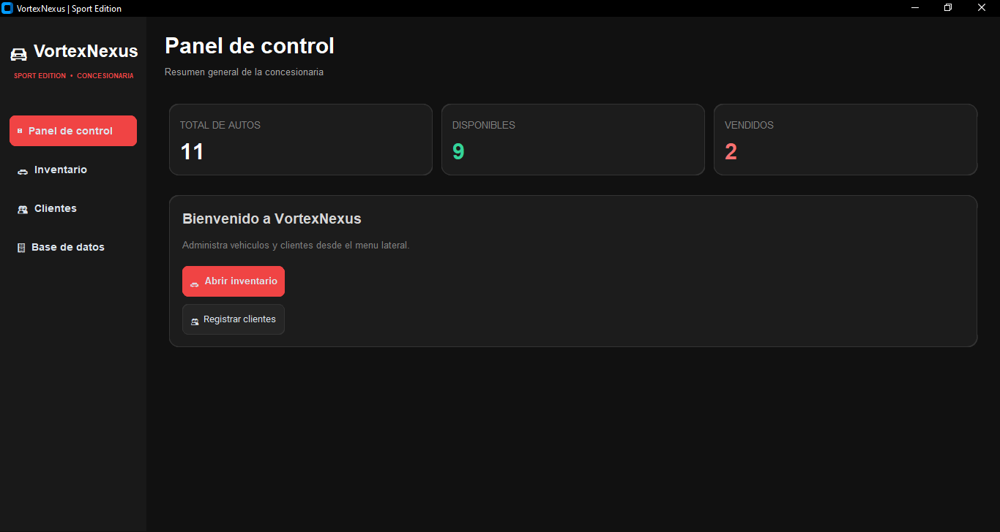
VortexNexus | Concesionaria
VortexNexus es un programa de gestión de concesionarias de vehículos, desarrollado en Python, que tiene como objetivo facilitar la administración y organización de la información.
El sistema permite registrar, modificar, eliminar y consultar vehículos y clientes, además de controlar el estado del inventario. Posee una interfaz moderna e intuitiva y utiliza una base de datos SQLite para almacenar la información de manera organizada y prolija.
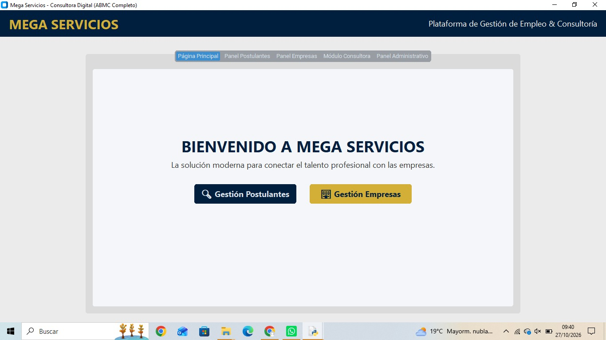
Mega Servicios | Consultoría
Mega Servicios es una aplicación informática de gestión y consultoría digital que funciona como una plataforma centralizada de intermediación laboral para conectar de manera eficiente a las personas que buscan empleo con las empresas clientes que necesitan cubrir vacantes. A través de estas funciones, el operador administrativo puede dar de alta nuevos perfiles profesionales y ofertas laborales adjuntando currículums en PDF, consultar y filtrar la información en tiempo real mediante tablas interactivas, actualizar los datos cuando sea necesario mediante la modificación, y dar de baja registros de forma segura.
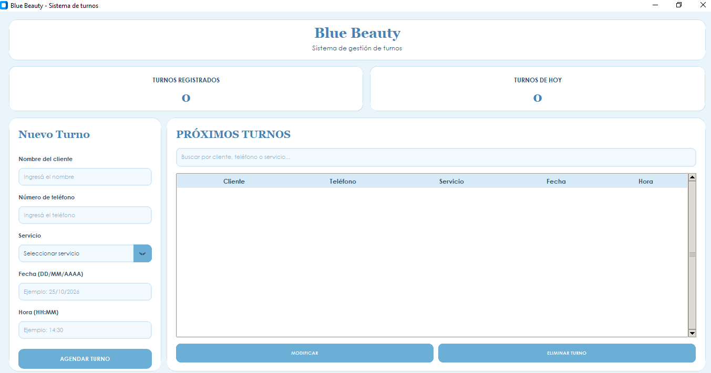
Blue Beauty | Gestión de Turnos
Blue Beauty es una aplicación para gestionar turnos de un salón de estética. Permite registrar, buscar, modificar y eliminar turnos, guardando los datos en una base de datos.
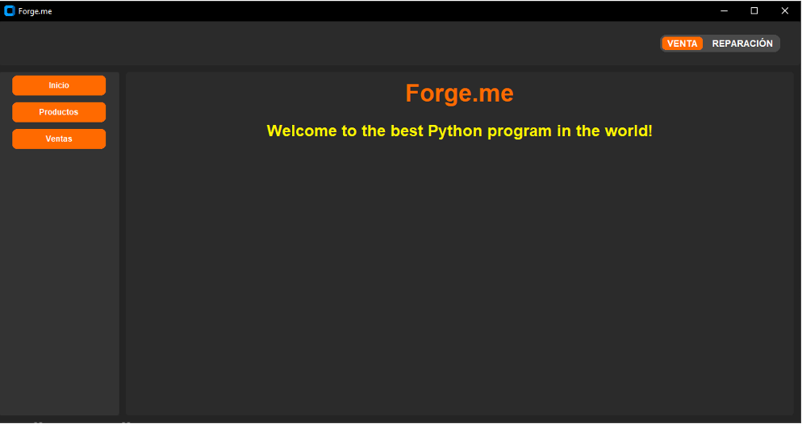
Forge.me | Ventas y Servicio Técnico
Forge.me es una aplicación de escritorio desarrollada en Python para administrar información de un negocio de informática. El programa cuenta con dos modos principales: VENTA y REPARACIÓN. Según el modo elegido, se habilitan distintos menús para trabajar con productos, ventas, clientes y reparaciones.
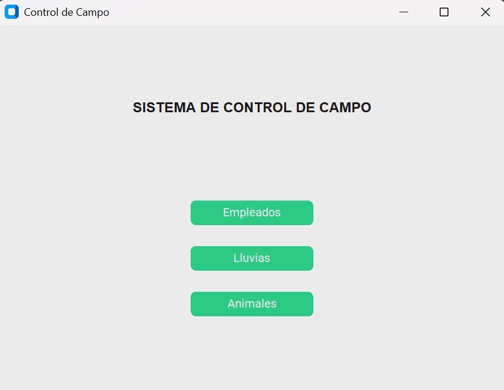
Sistema de Control de Campo
Este sistema cumple la principal función de ayudar a las personas que cuentan con empleados y animales a su cargo y necesitan llevar registro de las actividades realizadas, tanto como el sueldo, horas y dias trabajados - en el caso de empleados - y nacimientos y vacunas en el caso de los animales. Cuenta también con una sección para poder registrar las precipitaciones de la zona con fecha y milímetros caídos.
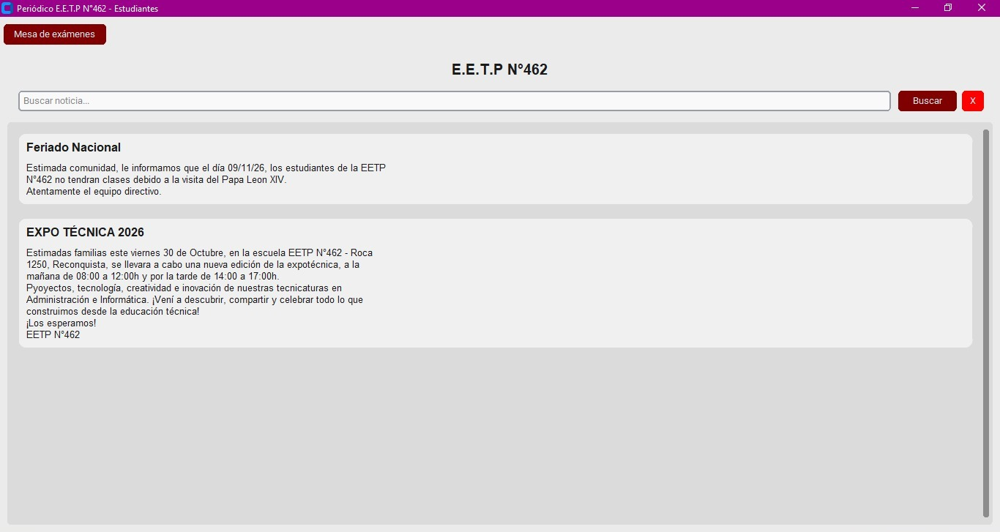
Periódico E.E.T.P. N° 462
Módulo institucional para la difusión de noticias escolares y comunicados oficiales.
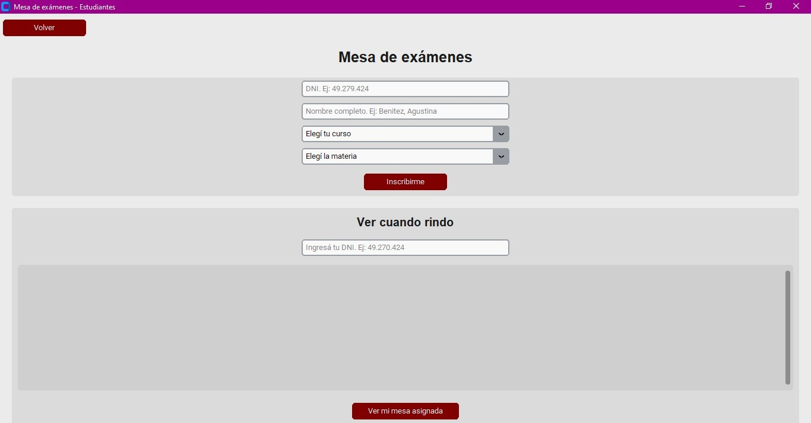
Mesa de Exámenes Escolar
Formulario interactivo para inscripción de estudiantes a mesas examinadoras.
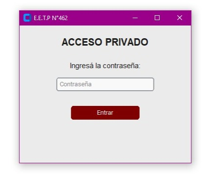
Acceso Privado / Autenticación
Mi aplicación funciona como un periódico para que los alumnos/as se mantengan informados acerca de lo que sucede en su institución y que sirva como motivación para querer seguir aprendiendo. Por otra parte, la aplicación cuenta con una sección para que los estudiantes puedan inscribirse a la mesa de exámenes y contar con la información necesaria para saber cuándo rendir, esto evitaría confusiones y aliviaría el trabajo de los/as preceptores.
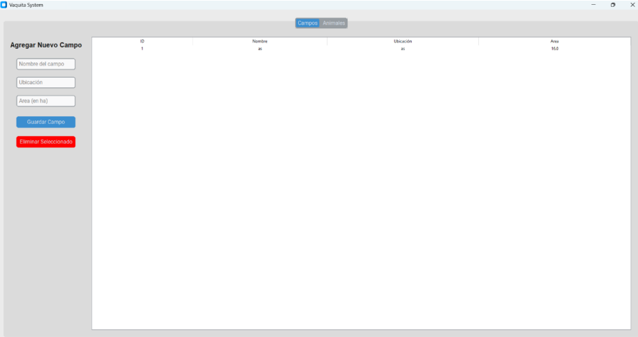
Vaquita System | Gestión de Campos
Vaquita System es un sistema de libreta digital de ganadería diseñado para satisfacer las necesidades administrativas del productor ganadero mediante un sistema digital más eficiente, cómodo y ordenado.
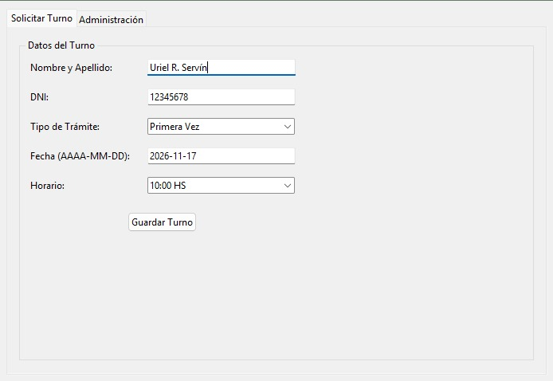
Gestión de Trámites y Turnos
Es una aplicación de escritorio en Python que funciona como un Sistema de Gestión de Turnos para el Carnet de Conducir. Permite registrar ciudadanos que solicitan un turno yadministrarlos mediante una base de datos local.
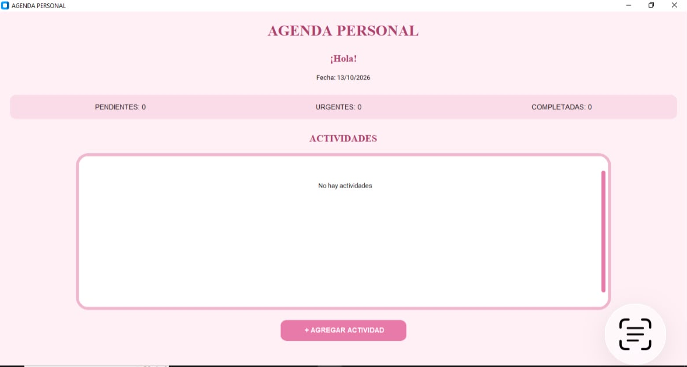
Agenda Personal & Tareas
Agenda Personal es una aplicación diseñada para facilitar la organización de las actividades cotidianas. Surge como una solución al problema de olvidar tareas, confundir fechas o perder el control de las responsabilidades diarias. Permite registrar, modificar y administrar actividades, establecer prioridades y llevar un seguimiento de las tareas pendientes y completadas. Con una interfaz sencilla e intuitiva, ayuda a organizar mejor el tiempo y mantener todas las actividades en un solo lugar.
FanFrame | Plataforma de Reseñas
Esta app está inspirada en plataformas como Letterboxd, que permiten registrar y compartir opiniones sobre películas. La propuesta busca ampliar esta idea a otros contenidos culturales, como series, canciones, álbumes, artistas y libros. Se desarrolla como una aplicación de escritorio rápida y práctica.
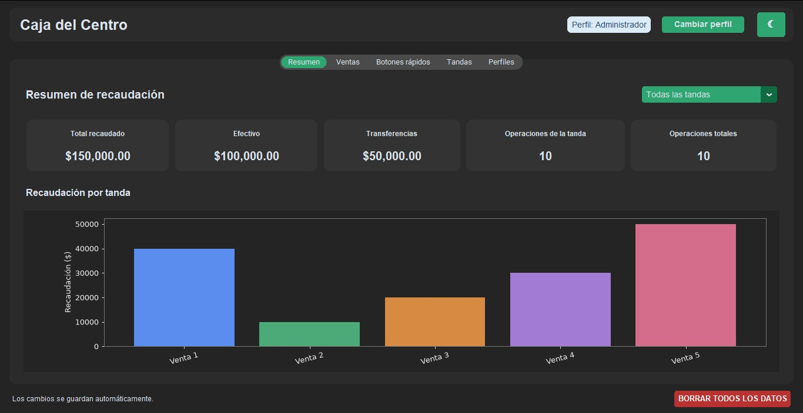
Caja del Centro | Panel Financiero
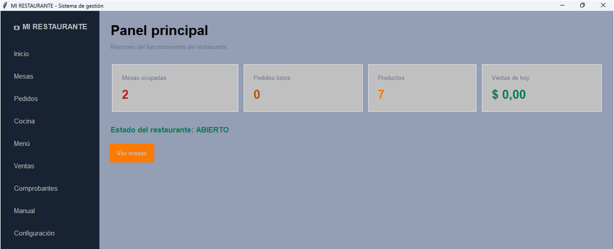
Mi Restaurante | Sistema de Gestión
El Sistema de Gestión para Restaurantes es un programa creado para facilitar la organización y el trabajo diario de un restaurante. Desde una misma aplicación, permite controlar las mesas, registrar pedidos, administrar los productos del menú, organizar la preparación de los alimentos y consultar las ventas realizadas.
El sistema busca simplificar las tareas habituales del personal y mantener la información organizada. De esta manera, es más fácil saber qué mesas están ocupadas, qué pedidos deben prepararse y cuáles ya están listos para entregar.
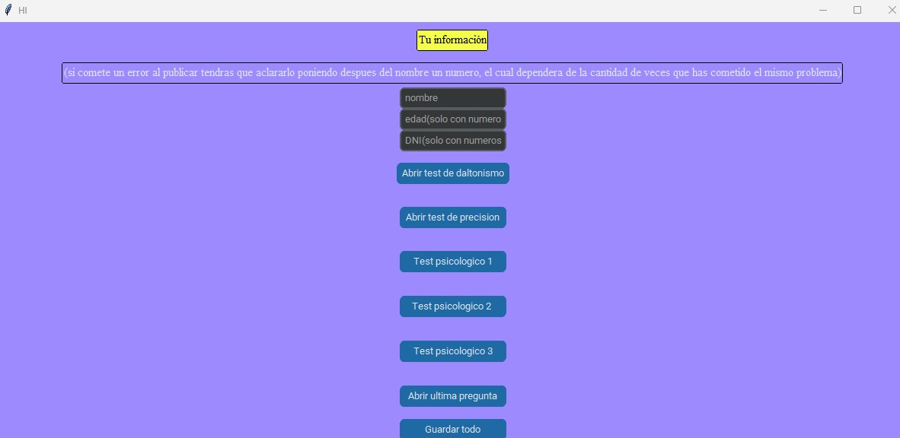
Test Psicológico
Es una aplicación que servirá como test psicológico para quienes quieran ser contratados, para que se tenga de manera más detallada a qué tipo de persona va a contratar la empresa.
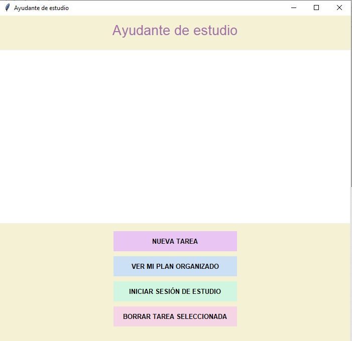
Ayudante de estudio
Este ayudante de estudio surgió como una solución ante las dificultad que los alumnos presentan a la hora de estudiar. La idea es brindar una experiencia única a cada usuario adaptándose a las necesidades de cada estudiante. Teniendo esto en cuenta la aplicación brinda un plan de estudio organizado en bloques de estudios y de descansos, haciendo más fácil la organización de las horas de estudio
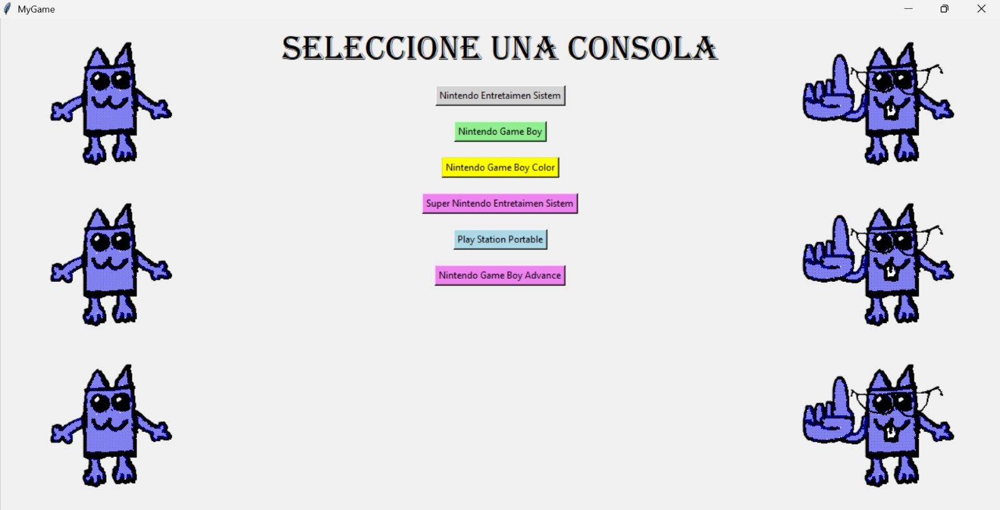
MyGame
MyGame es un programa para jugar y apreciar el arte de los videojuegos de distintas eras
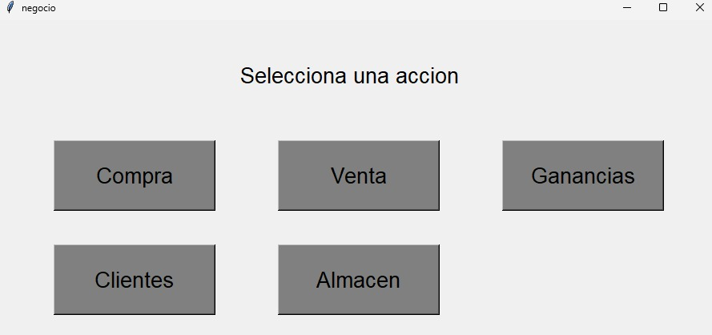
Compra/venta - Seguímiento de stock
Es un programa que se encarga tanto de registrar las compras y ventas de un negocio, como de llevar un seguimiento del stock en el almacén y las ganancias que se generan.
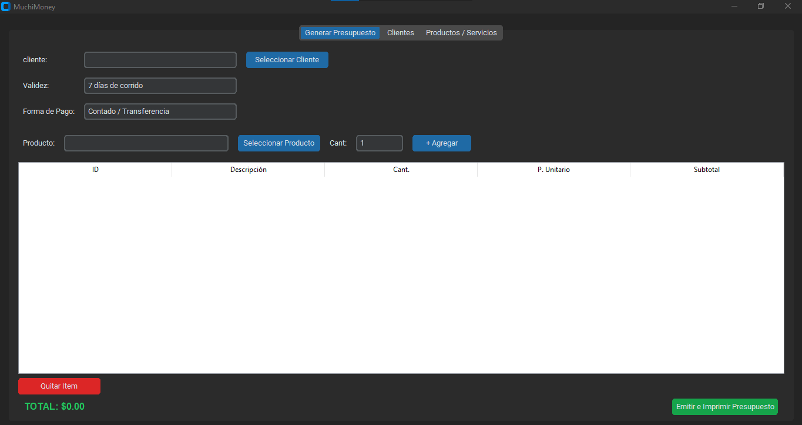
MuchiMoney
MuchiMoney es una herramienta diseñada para la creación y gestión de presupuestos. Entre sus principales funciones se encuentra la posibilidad de exportar los datos registrados en formato PDF, facilitando su impresión y archivo físico.
MI MASCOTA
Es una aplicación de escritorio integral en Python que integra una interfaz gráfica de
usuario (GUI) moderna utilizando la biblioteca CustomTkinter, respaldada por una base de
datos relacional implementada en SQLite3 (mascotas.db). El sistema busca centralizar la
identidad del tutor, el perfil morfológico y fotográfico de los animales, una agenda interactiva
de eventos y un historial clínico estructurado por categorías, ofreciendo una solución
funcional, original y coherente a la problemática de la administración del bienestar de tu
macota.
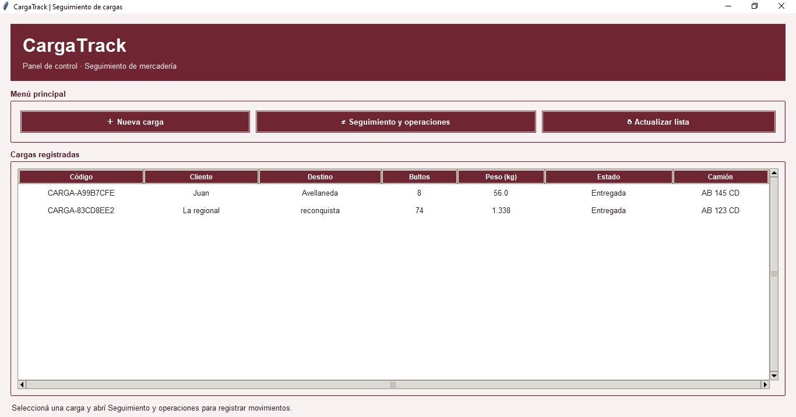
CargaTrack- seguímiento de carga
Este trabajo es con el objetivo de ayudar específicamente a una empresa de metalúrgica, teniendo registro del control de carga, colaborando a la organización de cada producto, integrado con un QR para cada carga de la empresa, incluyendo un mapa del recorrido de los productos, todo atraves de un programa que fue realizado en el lenguaje de programación de Python.
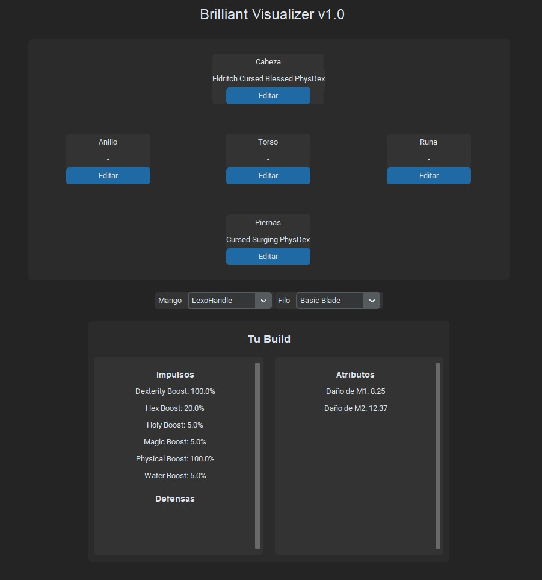
Brilliant Visualizer
"Brilliant Visualizer" (De brilliant gem, de voxlblade) es un analizador de builds/loadouts del juego RPG "Voxlblade" por Bawxl. Le permite al usuario elejir su equipamiento y partes de arma, y luego muestra impulsos, defensas, y atributos especiales calculados desde ellos. De esta manera, un jugador puede analizar un build antes de gastar tiempo y recursos en realizarlo en el juego en si, algo dificl de hacer a mano gracias a la complejidad del juego.